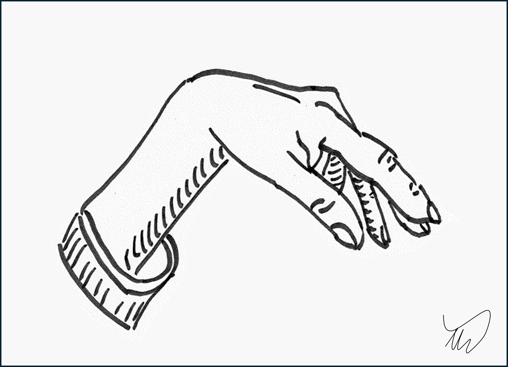

Case 7. A weak hand on waking
Case
An 84 year old woman presented with right hand weakness after waking up from sleeping in an armchair overnight.
Her wrist was weak, with the hand dangling limply. She couldn't straighten her fingers, but could still flex them - if she made a fist, it was strong, but she couldn't re-open it after. She had noted slight sensory changes over the back of the hand if she touched it.
There was no pain, and there were no problems more proximally or in other segments.
She reported unintentional weight loss in the preceding months with reduced appetite, but had otherwise been well.
Her past medical history included hypertension, osteoarthritis and cataracts. She took a blood pressure-reducing tablet. She lived independently at home but supportive relatives who lived nearby helped out with tasks like shopping and housework.
On examination she had:
The rest of the neurological examination, including reflexes, was normal. She was well, with normal observations, and no rashes or joint abnormalities

Where is the lesion?